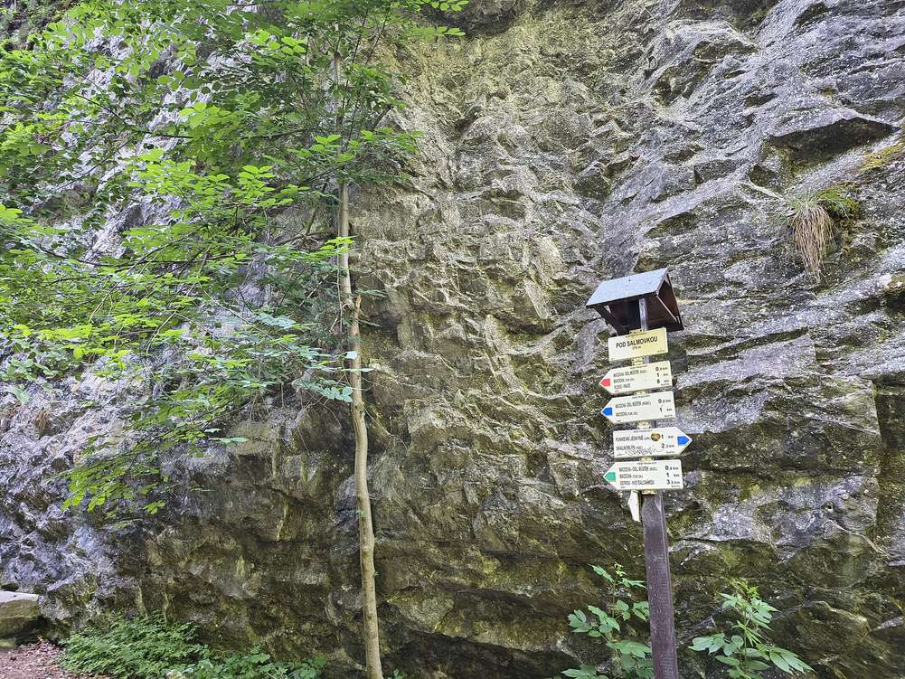
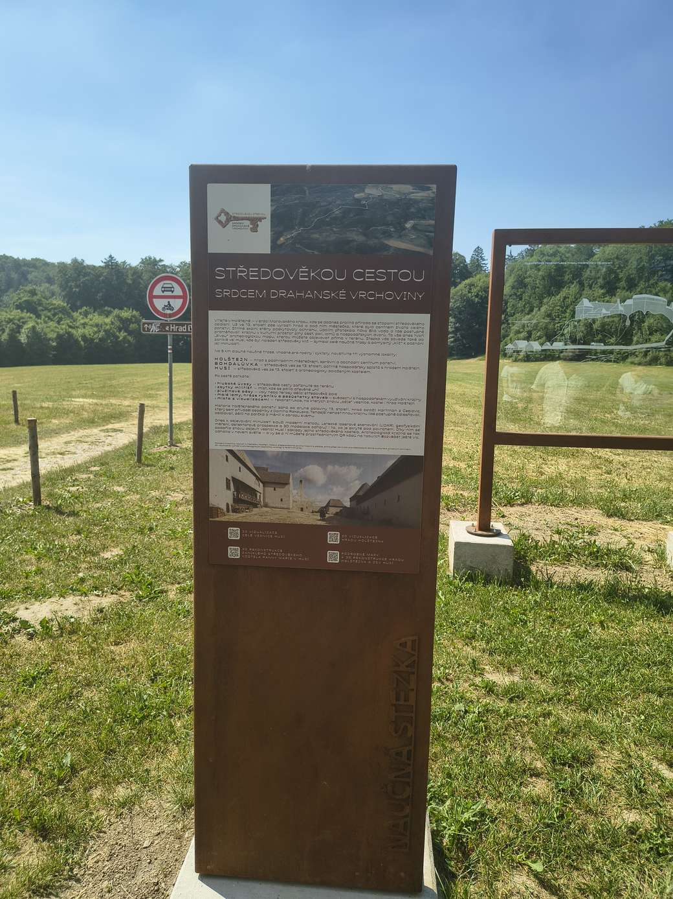
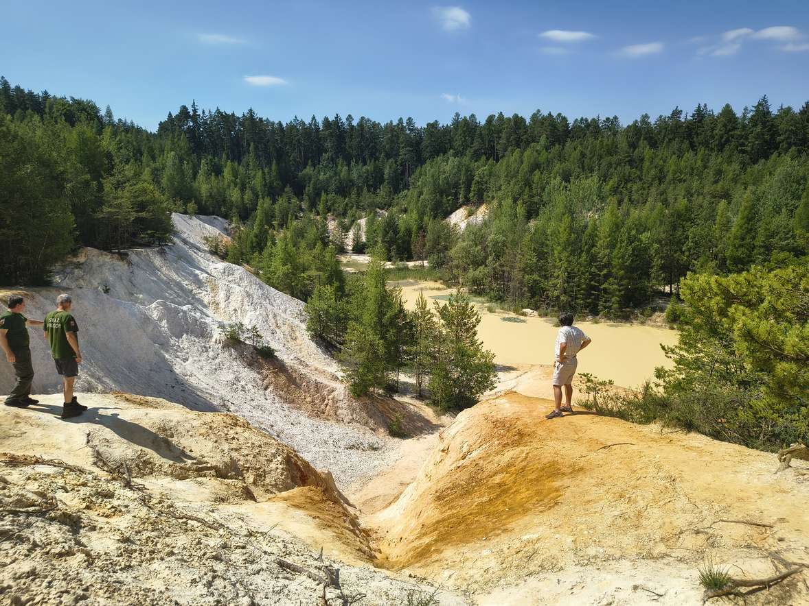
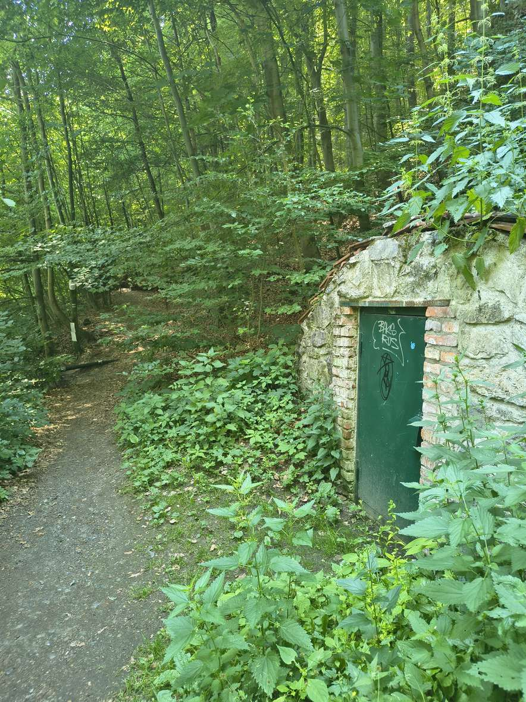
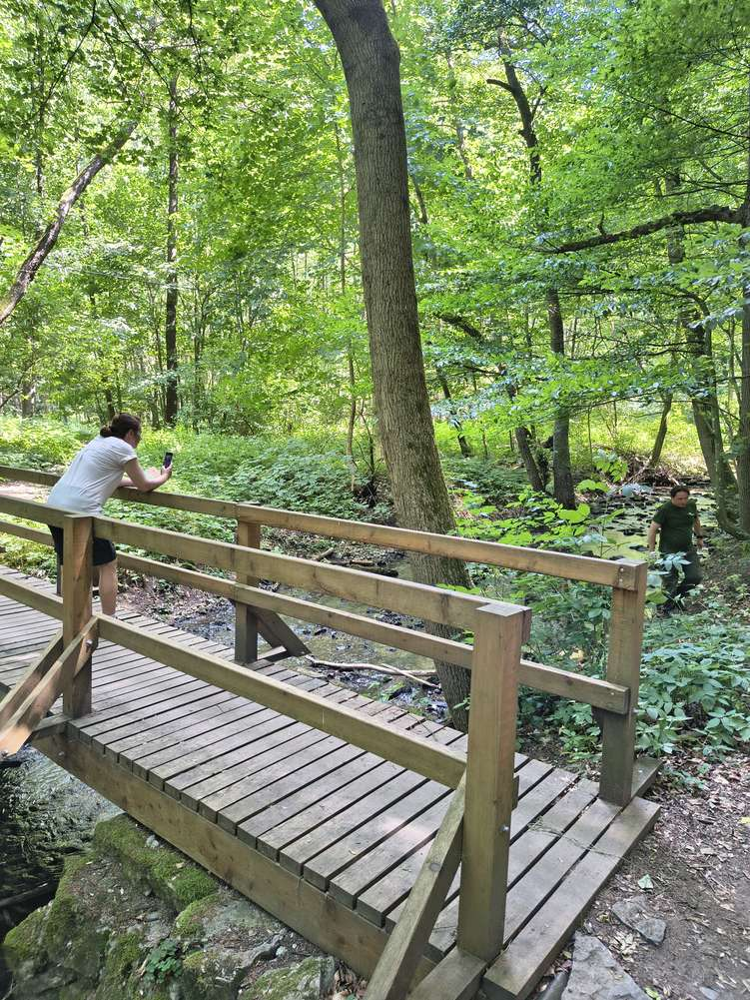
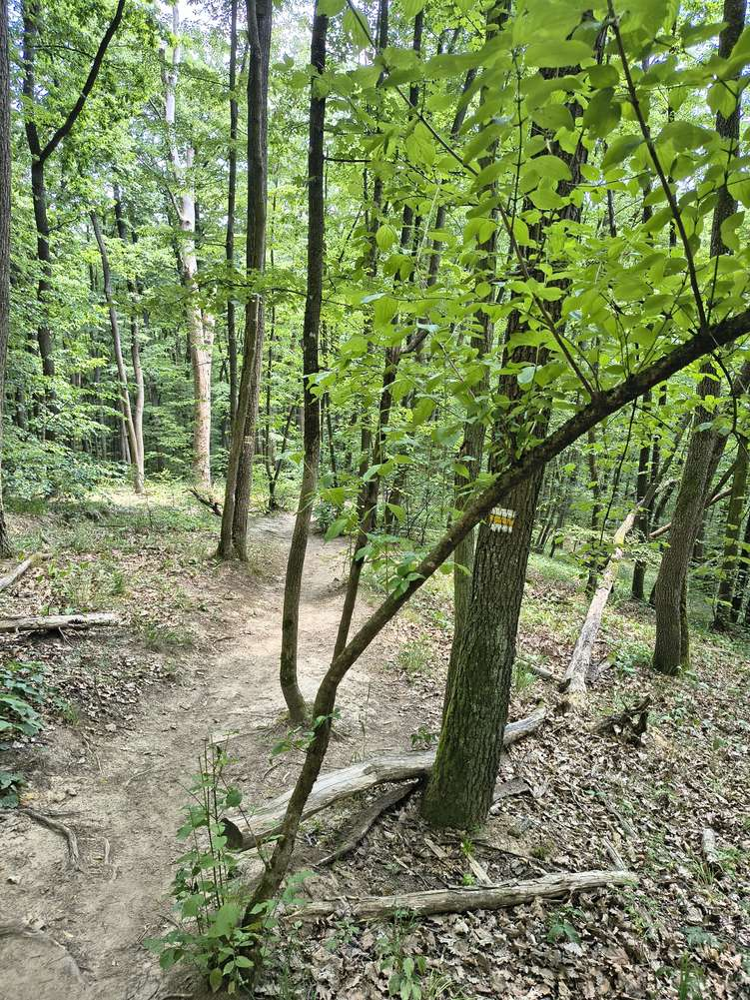

Komplexní strategický dokument, jehož cílem je sladit rekreační využívání území s ochranou přírodních a krajinných hodnot. Vychází z Koncepce práce s návštěvnickou veřejností CHKO Moravský kras (2023) a dalších strategických dokumentů a přímo navazuje na konkrétní problémové lokality a ohrožené biotopy.
Sběr podkladových dat, vyhodnocení dat ze stávající monitorovací sítě, identifikace problémových lokalit a vyhodnocení ekologické hodnoty biotopů v místech střetu s ochranou přírody.
Síť doporučených tras, návrhy na řízení návštěvnosti, redistribuci turistů do méně zatížených lokalit (včetně pozemků ŠLP Křtiny) a revitalizaci naučných stezek. Zahrnuje i mapování nelegálních stezek.
Podle Koncepce práce s návštěvnickou veřejností (2023) dochází k nejvýraznějším střetům návštěvnosti s ochranou přírody v 11 lokalitách – mimo jiné Holštejn, Pustý žleb, Suchý žleb, Skalní mlýn, NPP Rudické propadání, Habrůvecká plošina, Křtinské a Josefské údolí, PR Údolí Říčky nebo NPR Hádecká planinka. Nejčastějšími konflikty jsou pohyb mimo značené stezky, nocování a rozdělávání ohňů v jeskyních, ilegální single traily a vjezd vozidel mimo komunikace.






Součástí redistribuce návštěvnosti je vznik atraktivních cílů mimo nejcennější a nejzatíženější lokality – odpočívadlo ve 100letém háji (Brno-Soběšice), rozvoj Arboreta Křtiny a lesní pedagogiky Doubravka (viz realizované oblasti), instalace 7 kompostovacích toalet a síť hipotras v oblasti Ořešína pro oddělení jezdců na koních od pěších a cyklistů.
Swiss Federal Institute for Forest, Snow and Landscape Research (WSL) přenáší do projektu zkušenosti s řízením návštěvnosti v příměstských chráněných územích. Spolupráce zahrnuje dvě terénní návštěvy: studijní cestu českého týmu do Wildnispark Zürich–Sihlwald (duben 2026) a odbornou návštěvu švýcarských expertů v CHKO Moravský kras a ŠLP Křtiny (květen–červen 2026). Doporučení WSL budou zapracována do finální verze Plánu udržitelného turismu.
Projekt „Ochrana cenných ekosystémů a řízení udržitelné turistiky v okolí Brna" je realizován s finanční podporou v rámci Programu Švýcarsko-české spolupráce. Realizátorem je Atregia s.r.o. ve spolupráci s Mendelovou univerzitou v Brně, ASITIS s.r.o., KAVYL spol. s r.o. a švýcarským partnerem WSL. Za obsah stránek odpovídá výhradně realizátor projektu.